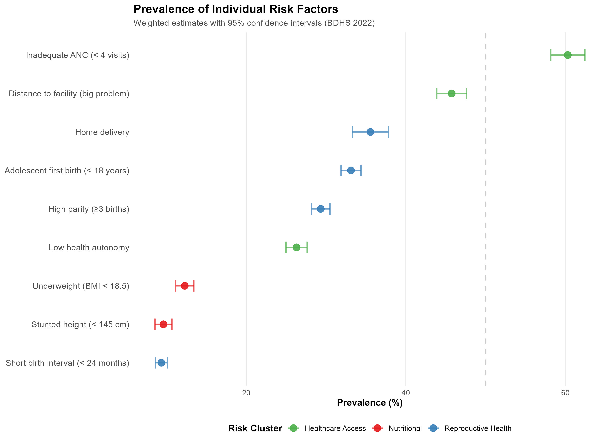
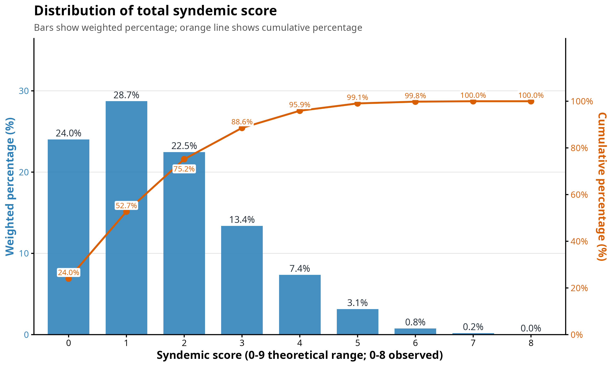
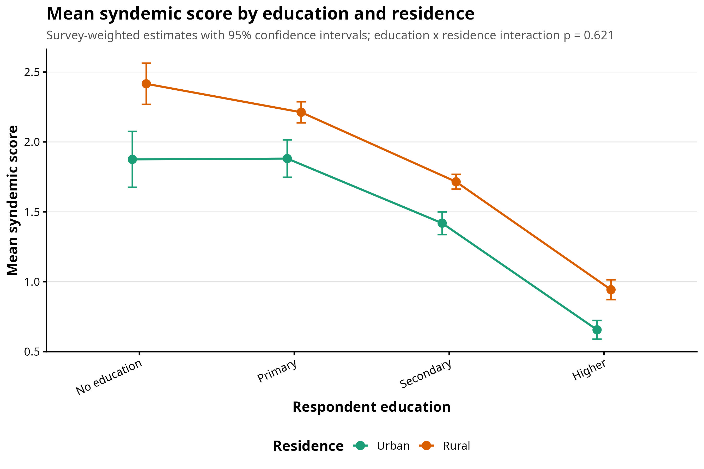
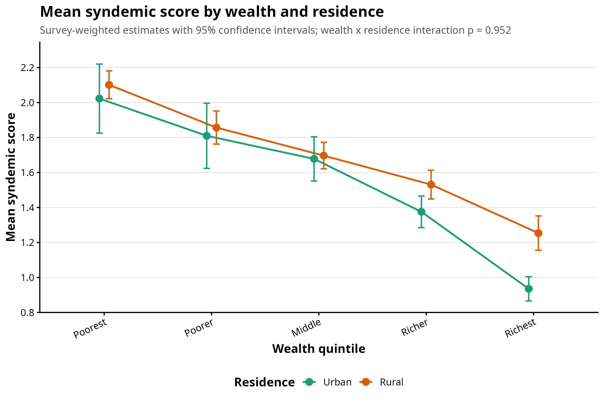
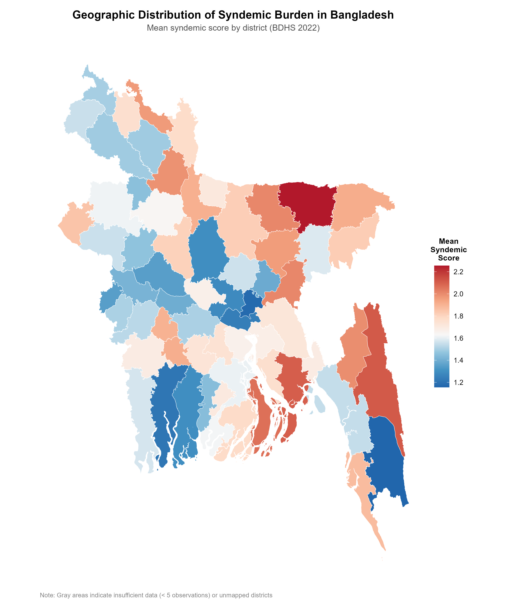
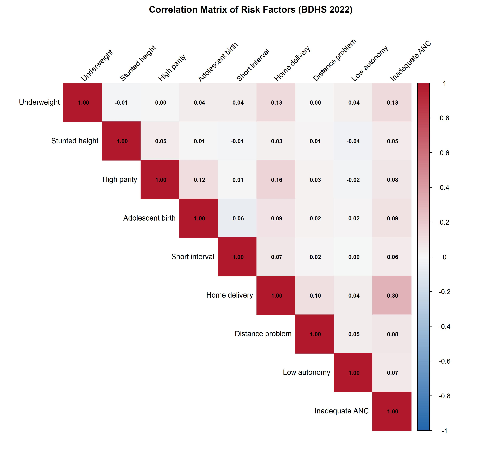

graph LR
A["STRUCTURAL DRIVERS<br>Socioeconomic status<br>Education opportunities<br>Residence and Geography<br>Policy environment"]
B["SOCIAL ENVIRONMENT<br>Employment status<br>Household dynamics<br>Healthcare quality<br>Gender-based autonomy"]
C["PATHWAYS<br>Nutritional intake<br>Reproductive timing<br>Birth spacing<br>Service utilization"]
D["SYNDEMIC CLUSTERS<br>Nutritional Risks<br>Reproductive Risks<br>Healthcare-Access Risks"]
E["OUTCOMES<br>Cumulative score (0-8)<br>Low, Medium, High burden"]
A --> B
B --> C
C --> D
D --> E
E -.-> A
Modeling the Syndemic Burden of Nutritional, Reproductive, and Healthcare-Access Risks Among Women in Bangladesh
Evidence from the Bangladesh Demographic and Health Survey 2022
Abstract
Background. Women in Bangladesh experience overlapping nutritional, reproductive-health, and healthcare-access constraints. A syndemic lens is useful when such risks cluster within socially patterned contexts, but empirical claims require more than a simple count of co-occurring conditions.
Objective. This study estimated the burden, clustering, and social patterning of co-occurring risks among women aged 15–49 using BDHS 2022.
Methods. Nine binary indicators were grouped into nutritional, reproductive-health, and healthcare-access/autonomy domains. The primary outcome was the cumulative syndemic-burden score (range 0–9; observed 0–8), analyzed using survey-weighted quasi-Poisson regression and reported as incidence rate ratios (IRR). Ordinal logistic regression (low/medium/high burden) was used as a sensitivity analysis. All models incorporated BDHS sampling weights, primary sampling units, and strata.
Results. Among 11,657 women with recent births, 24.0% had a score of 0, 64.6% scored 1–3, and 11.4% scored ≥4 (high burden). Any reproductive-health risk affected 57.6% of women and any access/autonomy risk affected 73.8%. All three risk domains co-occurred more than expected under independence (observed/expected ratio 1.23). In the full quasi-Poisson model, higher respondent education (IRR 1.00 reference), rural residence (IRR 1.11, 95% CI 1.06–1.16), and lower wealth were associated with elevated burden, while working women had lower scores (IRR 0.94, 95% CI 0.91–0.98). Ordinal sensitivity results were directionally consistent.
Conclusion. The findings support a socially patterned cumulative-burden interpretation. Evidence for clustering is present, but the report avoids claiming definitive causal or biological synergy because the analysis is cross-sectional and lacks a downstream health outcome independent of the component risks.
Study Snapshot
11,657 women in analytic sample
11.4% high burden, score ≥4
1.23 observed/expected ratio, all 3 domains co-occurring
IRR 1.11 rural vs urban, quasi-Poisson full model
IRR 2.06 no education vs higher education
IRR 1.39 poorest vs richest wealth quintile
Introduction
Syndemic theory describes the clustering and interaction of health problems under harmful social conditions (Singer et al. 2017; Mendenhall et al. 2017). The key distinction is that a syndemic is not merely multimorbidity. A defensible syndemic analysis should show clustering, identify social or structural drivers, and assess whether co-occurrence appears greater or more consequential than expected from independent risks (Tsai 2018; Bulled 2024).
Bangladesh is a strong setting for this framework because women’s health is shaped by intersecting nutritional vulnerability, early and high-parity reproduction, barriers to maternal healthcare, and constraints on decision-making autonomy. BDHS 2022 provides nationally representative data on women of reproductive age, household socioeconomic position, reproductive history, maternal service use, and healthcare access constraints (National Institute of Population Research and Training (NIPORT) and ICF 2024; World Bank Microdata Library 2024).
Prior Bangladesh evidence shows persistent socioeconomic inequalities in women’s undernutrition (Rahman et al. 2022; Hossain et al. 2023; Rahman et al. 2019), geographic and wealth gradients in nutritional burden across Southeast Asia (Biswas et al. 2022), and strong links between child marriage, adolescent motherhood, education, residence, and partner characteristics (Islam et al. 2021; UNICEF Data 2025; World Health Organization 2024). Maternal healthcare studies similarly show that institutional delivery, antenatal care, and the continuum of care are patterned by wealth, education, residence, and women’s autonomy (Chakraborty et al. 2003; Yaya et al. 2017; Kamal, Hassan, and Alam 2015; Kamal, Hassan, and Kabir 2015; Khan et al. 2020, 2022; Haider et al. 2017). This study brings these strands together by modeling co-occurring risks as a cumulative burden.
Study Aims
- Estimate the weighted prevalence of individual risk factors and cumulative burden.
- Assess whether nutritional, reproductive-health, and access/autonomy domains cluster more than expected under independence.
- Identify sociodemographic predictors of elevated burden using survey-weighted quasi-Poisson regression.
- Evaluate robustness with ordinal logistic and cutoff sensitivity analyses.
Conceptual Framework
The framework (adapted from Solar & Irwin, 2010 and Tsai, 2024) treats social determinants as upstream conditions that pattern multiple proximal risk domains. The feedback loop at the bottom represents the biosocial nature of syndemics: the accumulated health burden (outcomes) can reinforce and exacerbate the very structural and social inequalities that initially produced the risks.
Methods
Data Source and Study Population
The analysis utilized the 2022 Bangladesh Demographic and Health Survey (BDHS), a nationally representative cross-sectional survey (National Institute of Population Research and Training (NIPORT) and ICF 2024). The study population was restricted to ever-married women aged 15–49 who had a live birth in the three years preceding the survey to ensure the availability of maternal healthcare and decision-making indicators.
graph TD
A["Ever-married women interviewed (15–49 years)<br/>(N = 30,344)"]
E1["Excluded: No live birth in the 3 years<br/>preceding the survey (n = 18,687)"]
B["<b>Analytic sample for descriptive statistics</b><br/>(n = 11,657)"]
E2["Excluded: Missing values in multivariable<br/>model covariates (n = 4,031)"]
C["<b>Final sample for multivariable modeling</b><br/>(n = 7,626)"]
A --> B
A -.-> E1
B --> C
B -.-> E2
%% Styling
style B fill:#f0f7ff,stroke:#0056b3,stroke-width:2px
style C fill:#f4fff4,stroke:#2e7d32,stroke-width:2px
Due to the nature of survey skip patterns and item-level non-response, a complete-case approach requiring all nine risk indicators to be observed would have restricted the sample to 1,531 women (13.1% of those with recent births). To maintain population representativeness and statistical power, the primary analysis utilized an available-indicator cumulative score, including all 11,657 women for descriptive analysis and 7,626 women for the multivariable modeling where covariate data were complete.
Outcome and Risk Domains
Nine binary risk indicators were grouped into three functional domains to capture the multi-dimensional nature of the syndemic burden.
Code
tibble(
Domain = c("Nutritional", "Reproductive health", "Healthcare access and autonomy", "**Total Syndemic Score**"),
Indicators = c(
"Underweight (BMI < 18.5); stunted height (< 145 cm)",
"Adolescent first birth (< 20y); high parity (> 4); short birth interval (< 24m); home delivery",
"Inadequate ANC (< 4 visits); distance to facility (major problem); low health autonomy",
"Sum of all nine binary indicators (dichotomized 0/1)"
),
`Score Range` = c("0–2", "0–4", "0–3", "**0–9**")
) |>
kable(caption = "Syndemic risk domains, indicators, and score construction", align = "llc", escape = FALSE)| Domain | Indicators | Score Range |
|---|---|---|
| Nutritional | Underweight (BMI < 18.5); stunted height (< 145 cm) | 0–2 |
| Reproductive health | Adolescent first birth (< 20y); high parity (> 4); short birth interval (< 24m); home delivery | 0–4 |
| Healthcare access and autonomy | Inadequate ANC (< 4 visits); distance to facility (major problem); low health autonomy | 0–3 |
| Total Syndemic Score | Sum of all nine binary indicators (dichotomized 0/1) | 0–9 |
For descriptive reporting and sensitivity analysis, the total score was collapsed into three ordered categories: Low burden (score 0), Medium burden (score 1–3), and High burden (score ≥ 4).
Covariates and Model Parameters
Multivariable models included sociodemographic factors identified in the literature as key drivers of maternal and nutritional health in Bangladesh.
Code
tibble(
`Variable Group` = c("Demographic", "Socioeconomic", "Geography", "Empowerment"),
`Covariates (Levels)` = c(
"Age group (15–24, 25–34, 35–49)",
"Respondent education (No education, Primary, Secondary, Higher); Wealth quintile (Poorest to Richest); Husband's education",
"Administrative Division (8 regions); Type of residence (Urban, Rural)",
"Employment status (Working, Not working)"
),
`Reference Category` = c("15–24 years", "Higher education; Richest quintile", "Dhaka Division; Urban residence", "Not working")
) |>
kable(caption = "Covariates included in multivariable regression models", align = "lll")| Variable Group | Covariates (Levels) | Reference Category |
|---|---|---|
| Demographic | Age group (15–24, 25–34, 35–49) | 15–24 years |
| Socioeconomic | Respondent education (No education, Primary, Secondary, Higher); Wealth quintile (Poorest to Richest); Husband’s education | Higher education; Richest quintile |
| Geography | Administrative Division (8 regions); Type of residence (Urban, Rural) | Dhaka Division; Urban residence |
| Empowerment | Employment status (Working, Not working) | Not working |
Statistical Analysis
All descriptive and regression analyses incorporated BDHS survey weights, strata, and primary sampling units using R’s survey package (Lumley 2004, 2010).
Primary model: Survey-weighted quasi-Poisson regression (svyglm, family = quasipoisson) for the raw syndemic score (0–8). The quasi-Poisson family was selected because the score is a bounded integer with mild overdispersion relative to a simple Poisson process (observed variance/mean ratio = 1.23; svyglm dispersion φ = 0.77; diagnostic weighted GLM φ = 1.08). Negative binomial regression was evaluated but yielded an equivalent fit (θ = 22.20), confirming that quasi-Poisson was sufficient. Results are reported as incidence rate ratios (IRR) with 95% confidence intervals (Hilbe 2011; Gardner et al. 1995).
Sensitivity analysis: Ordinal proportional-odds logistic regression for low/medium/high burden categories (McCullagh 1980; Liu 2016). The ordinal model provides a complementary perspective using the collapsed categorical outcome; its results are reported in the Supplementary Appendix.
Results
Risk Factor Prevalence
The chart below displays the percentage of women affected by each individual risk factor, grouped by their functional domain (Healthcare Access, Reproductive Health, and Nutritional).
The points represent the estimated percentage (prevalence) in the population, while the horizontal lines show the 95% confidence intervals (the range within which we are certain the true value lies). For instance, Healthcare Access risks are the most common, with over 60% of women receiving inadequate antenatal care. In contrast, Nutritional risks like underweight and stunted height affect approximately 10–12% of the sample.
Code
knitr::include_graphics("figures/figure1_risk_factor_prevalence.jpg")
Syndemic Score Distribution
The distribution of the total syndemic score reveals the cumulative nature of risk among women in Bangladesh. While 24% of women have no identified risks, the majority (64.6%) experience between one and three concurrent risks.
Code
knitr::include_graphics("figures/figure2_syndemic_distribution.jpg")
Syndemic Burden Categories
For descriptive purposes, the syndemic score was collapsed into three ordinal categories representing the level of cumulative burden.
Code
burden_data <- read_csv("data/paper_burden_categories.csv", show_col_types = FALSE)
burden_data |>
transmute(
`Burden Level` = case_when(
str_detect(burden_category, "Low") ~ "Low Burden",
str_detect(burden_category, "Medium") ~ "Medium Burden",
str_detect(burden_category, "High") ~ "High Burden"
),
`Score Range` = case_when(
str_detect(burden_category, "Low") ~ "0",
str_detect(burden_category, "Medium") ~ "1–3",
str_detect(burden_category, "High") ~ "≥4"
),
`Unweighted n` = format(unweighted_n, big.mark = ","),
`Weighted Percentage (%)` = sprintf("%.1f%%", weighted_percent)
) |>
kable(
caption = "Classification of women by syndemic burden category (n = 11,657)",
align = "llrr"
)| Burden Level | Score Range | Unweighted n | Weighted Percentage (%) |
|---|---|---|---|
| Low Burden | 0 | 2,860 | 24.0% |
| Medium Burden | 1–3 | 7,487 | 64.6% |
| High Burden | ≥4 | 1,310 | 11.4% |
Sociodemographic and Geographic Patterning
The syndemic burden is strongly patterned by social determinants and geographic location. Mean syndemic scores across key demographic groups reveal significant disparities, particularly by education level and wealth quintile.
Code
knitr::include_graphics("figures/figure4_education_residence.jpg")
Intersectionality: Wealth and Residence
The interaction of household wealth and urban-rural residence further identifies the most vulnerable populations. While higher wealth is protective in both settings, rural women in the lowest wealth quintiles experience a disproportionately high cumulative risk burden.
Code
knitr::include_graphics("figures/figure5_intersectionality_wealth_residence.jpg")
Geographic Variation
Geographically, the syndemic burden is not uniform across Bangladesh. Divisions such as Sylhet and Mymensingh exhibit higher average scores and a greater prevalence of high-burden cases compared to divisions like Dhaka or Khulna.

Multivariable Quasi-Poisson Regression (Primary Model)
Survey-weighted quasi-Poisson regression (φ = 0.77 from the full svyglm model; diagnostic weighted GLM φ = 1.08) was fit for the raw syndemic score. Results are incidence rate ratios (IRR): the multiplicative change in expected syndemic score per unit change in a predictor, holding all other variables constant.
Code
table3 <- read_csv("data/table3_quasipoisson_irr.csv", show_col_types = FALSE)
table3 |>
mutate(variable_group = clean_variable_group(variable)) |>
transmute(
Group = variable_group,
Category = category,
Reference = if_else(is.na(coefficient), "✓", ""),
`IRR (95% CI)` = IRR_CI,
`p-value` = p_formatted
) |>
kable(
caption = "Table 3. Survey-weighted quasi-Poisson regression: predictors of syndemic burden score (n = 11,657)",
align = "llcll"
)| Group | Category | Reference | IRR (95% CI) | p-value |
|---|---|---|---|---|
| Age group | 15-24 | ✓ | 1.00 (reference) | NA |
| Age group | 25-34 | 1.05 (1.01-1.08) | 0.007 | |
| Age group | 35-49 | 1.14 (1.09-1.19) | <0.001 | |
| Respondent education | Higher | ✓ | 1.00 (reference) | NA |
| Respondent education | Secondary | 1.68 (1.59-1.79) | <0.001 | |
| Respondent education | Primary | 2.02 (1.88-2.16) | <0.001 | |
| Respondent education | No education | 2.06 (1.90-2.23) | <0.001 | |
| Wealth quintile | Richest | ✓ | 1.00 (reference) | NA |
| Wealth quintile | Richer | 1.16 (1.10-1.23) | <0.001 | |
| Wealth quintile | Middle | 1.24 (1.17-1.31) | <0.001 | |
| Wealth quintile | Poorer | 1.27 (1.18-1.36) | <0.001 | |
| Wealth quintile | Poorest | 1.39 (1.30-1.49) | <0.001 | |
| Residence | Urban | ✓ | 1.00 (reference) | NA |
| Residence | Rural | 1.11 (1.06-1.16) | <0.001 | |
| Division | Dhaka | ✓ | 1.00 (reference) | NA |
| Division | Barishal | 1.08 (1.00-1.16) | 0.043 | |
| Division | Chattogram | 1.10 (1.02-1.17) | 0.008 | |
| Division | Khulna | 1.02 (0.95-1.10) | 0.526 | |
| Division | Mymensingh | 1.07 (1.01-1.15) | 0.033 | |
| Division | Rajshahi | 1.06 (0.99-1.13) | 0.112 | |
| Division | Rangpur | 1.03 (0.96-1.11) | 0.423 | |
| Division | Sylhet | 1.09 (1.01-1.17) | 0.026 | |
| Employment | Not working | ✓ | 1.00 (reference) | NA |
| Employment | Working | 0.94 (0.91-0.98) | 0.002 | |
| Employment | Not reported / not applicable | 0.39 (0.34-0.44) | <0.001 | |
| Husband’s education | Higher | ✓ | 1.00 (reference) | NA |
| Husband’s education | Secondary | 1.08 (1.01-1.14) | 0.015 | |
| Husband’s education | Primary | 1.14 (1.08-1.22) | <0.001 | |
| Husband’s education | No education | 1.14 (1.07-1.22) | <0.001 | |
| Husband’s education | Not reported / not applicable | 0.89 (0.78-1.02) | 0.107 |
Code
forest_data <- table3 |>
filter(!is.na(coefficient)) |>
mutate(
variable_group = clean_variable_group(variable),
predictor = paste0(variable_group, ": ", category),
direction = if_else(IRR < 1, "Protective", "Risk"),
predictor = factor(predictor, levels = predictor[order(IRR)])
)
ggplot(forest_data, aes(x = IRR, y = predictor, color = direction)) +
geom_vline(xintercept = 1, linetype = "dashed", color = "gray45") +
geom_errorbarh(aes(xmin = CI_lower, xmax = CI_upper), height = 0.22, linewidth = 0.8) +
geom_point(size = 2.8) +
scale_x_log10() +
scale_color_manual(values = c("Protective" = "#1b9e77", "Risk" = "#d95f02")) +
labs(x = "Incidence Rate Ratio (log scale)", y = NULL, color = NULL) +
theme(legend.position = "bottom")Warning: `geom_errorbarh()` was deprecated in ggplot2 4.0.0.
ℹ Please use the `orientation` argument of `geom_errorbar()` instead.`height` was translated to `width`.
The full model revealed strong social gradients. Compared with women with higher education, those with no education had 2.06 times the expected syndemic score (IRR 2.06, 95% CI 1.90–2.23). Rural residence was associated with an 11% higher score (IRR 1.11, 95% CI 1.06–1.16). Women in the poorest wealth quintile had 39% higher scores than the richest (IRR 1.39, 95% CI 1.30–1.49). Working women had modestly lower scores (IRR 0.94, 95% CI 0.91–0.98). Husband’s education showed an independent gradient: no education versus higher (IRR 1.14, 95% CI 1.07–1.22).
Interaction and Sensitivity Checks
Code
social_interactions <- read_csv("data/paper_social_interaction_tests.csv", show_col_types = FALSE)
social_interactions |>
transmute(
Test = test,
`F statistic` = sprintf("%.2f", statistic),
`p-value` = p_formatted
) |>
kable(caption = "Ordinal model interaction tests (education × residence; wealth × residence)", align = "lrr")| Test | F statistic | p-value |
|---|---|---|
| Ordinal model: wealth x residence | 0.17 | 0.952 |
| Ordinal model: education x residence | 0.59 | 0.621 |
The interaction tests do not support statistical effect modification by residence for either wealth or education, indicating the evidence is stronger for broad social patterning than for subgroup-specific slopes.
Discussion
Principal Findings
This study found that co-occurring risks are common among women in Bangladesh. Most women had at least one risk, nearly two-thirds were in the medium-burden category, and 11.4% had high burden. Access/autonomy and reproductive-health risks were more common than nutritional risks, but all three domains co-occurred at a rate 23% higher than expected under independence.
The strongest and most consistent predictors were education and wealth. Women with no education had twice the expected syndemic score relative to women with higher education (IRR 2.06). Rural residence independently increased scores by 11%. Husband’s education remained independently predictive, consistent with a household-level interpretation of social advantage.
Interpretation in Light of Prior Evidence
The results align with prior Bangladesh studies showing socioeconomic gradients in women’s undernutrition (Rahman et al. 2022; Hossain et al. 2023), reproductive timing (Islam et al. 2021), and maternal healthcare utilization (Yaya et al. 2017; Khan et al. 2022; Haider et al. 2017). The contribution here is to show that these risks are not isolated — they cluster across domains and are patterned by the same social determinants.
The findings also reflect the methodological caution recommended in recent syndemic literature (Tsai 2018; Bulled 2024). The score captures cumulative burden and modest clustering, but true syndemic synergy would require a downstream health outcome independent of the component risks, or longitudinal evidence of interacting pathways. The quasi-Poisson count model was selected as the primary model because it retains the full information in the score distribution, produces directly interpretable IRRs, and appropriately handles the mild overdispersion present in the data.
Policy Implications
The results point toward integrated interventions rather than single-risk programs. Education, household socioeconomic position, rural service access, ANC coverage, and women’s decision-making autonomy are linked domains. Programs addressing maternal nutrition, reproductive health, and service access together may better match the pattern of co-occurring risk observed in the data.
Strengths and Limitations
Strengths include nationally representative BDHS 2022 data, survey-weighted estimation throughout, a clearly defined multidomain burden score, explicit clustering checks, a primary count model with sensitivity analysis, and transparent reporting of model diagnostics.
Limitations are important. The cross-sectional design prevents causal inference. Several indicators are subgroup-specific or missing for subsets of women, so the score is based on available indicators rather than complete observation of all nine risks. The analysis tests clustering and social patterning more directly than biological or causal synergy.
Conclusion
BDHS 2022 evidence shows that nutritional, reproductive-health, and healthcare-access/autonomy risks cluster among Bangladeshi women and are strongly socially patterned. The most defensible interpretation is a cumulative syndemic-burden framework: the burden is multidomain, socially structured, and policy-relevant, but claims of causal synergy should remain cautious until tested with longitudinal data or independent downstream health outcomes.
Supplementary Appendix
S1. Sample Characteristics
Code
table1 <- read_csv("data/table1_sample_characteristics.csv", show_col_types = FALSE)
table1 |>
kable(
caption = "Table 1. Sample characteristics (n = 11,657 women with recent births, BDHS 2022)",
align = "lrr"
)| variable | category | n | weighted_percent | ci_lower | ci_upper | percent_ci | variable_label |
|---|---|---|---|---|---|---|---|
| age | Mean (years) | 11657 | NA | NA | NA | 26.7 (26.6–26.9) | Age (years) |
| age_group | 15–24 | 4552 | 40.023328 | 38.930093 | 41.116563 | 40.0 (38.9–41.1) | Age group |
| age_group | 25–34 | 5686 | 48.057783 | 46.989222 | 49.126343 | 48.1 (47.0–49.1) | Age group |
| age_group | 35–49 | 1419 | 11.918889 | 11.199661 | 12.638117 | 11.9 (11.2–12.6) | Age group |
| education | No | 707 | 6.068668 | 5.333091 | 6.804246 | 6.1 (5.3–6.8) | Education level |
| education | Primary | 2690 | 22.692787 | 21.503959 | 23.881615 | 22.7 (21.5–23.9) | Education level |
| education | Secondary | 6075 | 53.624782 | 52.296227 | 54.953338 | 53.6 (52.3–55.0) | Education level |
| education | Higher | 2185 | 17.613762 | 16.356178 | 18.871347 | 17.6 (16.4–18.9) | Education level |
| wealth | Poorest | 2467 | 20.839595 | 19.386835 | 22.292355 | 20.8 (19.4–22.3) | Wealth quintile |
| wealth | Poorer | 2300 | 20.240692 | 19.084560 | 21.396824 | 20.2 (19.1–21.4) | Wealth quintile |
| wealth | Middle | 2283 | 20.255083 | 19.088045 | 21.422121 | 20.3 (19.1–21.4) | Wealth quintile |
| wealth | Richer | 2281 | 19.599175 | 18.339607 | 20.858744 | 19.6 (18.3–20.9) | Wealth quintile |
| wealth | Richest | 2326 | 19.065455 | 17.292520 | 20.838390 | 19.1 (17.3–20.8) | Wealth quintile |
| residence | Urban | 3950 | 27.770917 | 26.303769 | 29.238065 | 27.8 (26.3–29.2) | Residence type |
| residence | Rural | 7707 | 72.229083 | 70.761935 | 73.696231 | 72.2 (70.8–73.7) | Residence type |
| division | Barishal | 1311 | 6.440109 | 5.886354 | 6.993864 | 6.4 (5.9–7.0) | Administrative division |
| division | Chattogram | 1932 | 20.898781 | 19.343053 | 22.454508 | 20.9 (19.3–22.5) | Administrative division |
| division | Dhaka | 1793 | 25.548923 | 24.152996 | 26.944850 | 25.5 (24.2–26.9) | Administrative division |
| division | Khulna | 1333 | 10.460425 | 9.760769 | 11.160082 | 10.5 (9.8–11.2) | Administrative division |
| division | Mymensingh | 1353 | 8.236174 | 7.699554 | 8.772794 | 8.2 (7.7–8.8) | Administrative division |
| division | Rajshahi | 1218 | 10.757006 | 9.787137 | 11.726875 | 10.8 (9.8–11.7) | Administrative division |
| division | Rangpur | 1382 | 11.343060 | 10.598741 | 12.087379 | 11.3 (10.6–12.1) | Administrative division |
| division | Sylhet | 1335 | 6.315522 | 5.901995 | 6.729049 | 6.3 (5.9–6.7) | Administrative division |
| employment | Not working | 5786 | 73.622731 | 72.060112 | 75.185349 | 73.6 (72.1–75.2) | Employment status |
| employment | Working | 1966 | 26.377269 | 24.814651 | 27.939888 | 26.4 (24.8–27.9) | Employment status |
| husband_education | No education | 1171 | 15.524582 | 14.322285 | 16.726880 | 15.5 (14.3–16.7) | Husband’s education |
| husband_education | Primary | 2302 | 30.049254 | 28.573087 | 31.525422 | 30.0 (28.6–31.5) | Husband’s education |
| husband_education | Secondary | 2626 | 35.256231 | 33.803964 | 36.708498 | 35.3 (33.8–36.7) | Husband’s education |
| husband_education | Higher | 1527 | 19.169932 | 17.645750 | 20.694114 | 19.2 (17.6–20.7) | Husband’s education |
S2. Domain Co-occurrence and Clustering
Evidence for the clustering of risk indicators and functional domains was assessed via a correlation matrix and an observed-versus-expected (O/E) analysis.
Code
knitr::include_graphics("figures/figure3_correlation_heatmap.jpg")
Code
domain_oe <- read_csv("data/paper_domain_observed_expected.csv", show_col_types = FALSE)
domain_oe |>
transmute(
`Domain combination` = clustering_test,
`Observed %` = sprintf("%.1f", observed_pct),
`Expected % (independence)` = sprintf("%.1f", expected_pct_under_independence),
`O/E ratio` = sprintf("%.2f", observed_expected_ratio),
`95% CI (observed)` = sprintf("%.1f–%.1f", ci_lower_pct, ci_upper_pct)
) |>
kable(
caption = "Observed versus expected co-occurrence of risk domains under independence",
align = "lrrrr"
)| Domain combination | Observed % | Expected % (independence) | O/E ratio | 95% CI (observed) |
|---|---|---|---|---|
| Nutrition + reproductive | 13.7 | 12.5 | 1.10 | 12.5–15.0 |
| Nutrition + access/autonomy | 16.9 | 15.3 | 1.10 | 15.5–18.2 |
| Reproductive + access/autonomy | 47.2 | 44.8 | 1.05 | 45.1–49.2 |
| All three domains | 11.4 | 9.3 | 1.23 | 10.2–12.6 |
All three risk domains co-occurred at a rate 1.23 times higher than expected under the independence assumption, providing evidence of clustering across nutritional, reproductive-health, and access/autonomy domains.
S3. Model Diagnostics
Code
diag <- read_csv("data/quasipoisson_model_diagnostics.csv", show_col_types = FALSE)
diag |>
transmute(
Metric = metric,
Value = as.character(round(as.numeric(value), 4)),
Note = note
) |>
kable(caption = "S3. Quasi-Poisson model diagnostics", align = "lll")| Metric | Value | Note |
|---|---|---|
| n_complete | 11657 | Complete cases after recoding blank employment and husband education. |
| syndemic_score_min | 0 | Integer count check. |
| syndemic_score_max | 8 | Observed maximum; theoretical maximum is 9. |
| raw_mean | 1.6322 | Unweighted mean. |
| raw_variance | 2.0081 | Unweighted variance. |
| raw_variance_mean_ratio | 1.2304 | Unweighted variance divided by unweighted mean. |
| svyglm_quasipoisson_phi | 0.7699 | Final design-based quasi-Poisson dispersion from svyglm full model. |
| diagnostic_weighted_glm_quasipoisson_phi | 1.0843 | Comparable exploratory weighted GLM dispersion from the age, education, wealth, and residence diagnostic model. |
| observed_zero_percent | 24.0144 | Survey-weighted percentage with syndemic_score == 0. |
| poisson_expected_zero_percent | 27.0694 | Survey-weighted expected zero percentage from Poisson svyglm. |
| negative_binomial_expected_zero_percent | 22.8828 | Weighted expected zero percentage from diagnostic NB model. |
| negative_binomial_theta | 22.5791 | Negative binomial diagnostic used a simpler model because full survey NB is not available in svyglm. |
S4. Ordinal Sensitivity Analysis — Full Results
The ordinal proportional-odds model uses the same predictors and the same burden categories (Low 0 / Medium 1–3 / High ≥4) as the primary analysis. Results are odds ratios (OR) for being in a higher burden category, with no education, poorest wealth quintile, urban residence, and Barishal division as reference categories. The ordinal model is supplementary; its role is to confirm the direction and significance of predictors found in the primary quasi-Poisson model.
Code
ordinal_sens <- read_csv("data/paper_ordinal_sensitivity_results.csv", show_col_types = FALSE)
ordinal_sens |>
mutate(
Group = case_when(
str_starts(term, "husband_education") ~ "Husband's education",
str_starts(term, "age_group") ~ "Age group",
str_starts(term, "education") ~ "Respondent education",
str_starts(term, "wealth") ~ "Wealth quintile",
str_starts(term, "residence") ~ "Residence",
str_starts(term, "division") ~ "Division",
str_starts(term, "employment") ~ "Employment",
TRUE ~ term
),
Category = case_when(
str_starts(term, "husband_education") ~ str_remove(term, "husband_education"),
str_starts(term, "age_group") ~ str_remove(term, "age_group"),
str_starts(term, "education") ~ str_remove(term, "education"),
str_starts(term, "wealth") ~ str_remove(term, "wealth"),
str_starts(term, "residence") ~ str_remove(term, "residence"),
str_starts(term, "division") ~ str_remove(term, "division"),
str_starts(term, "employment") ~ str_remove(term, "employment"),
TRUE ~ term
)
) |>
transmute(
Group,
Category,
`OR (95% CI)` = OR_CI,
`p-value` = p_formatted
) |>
kable(caption = "S4. Ordinal logistic sensitivity analysis: odds ratios for elevated syndemic burden", align = "llll")| Group | Category | OR (95% CI) | p-value |
|---|---|---|---|
| Age group | 25-34 | 0.99 (0.87-1.14) | 0.936 |
| Age group | 35-49 | 1.13 (0.94-1.34) | 0.191 |
| Respondent education | Primary | 0.88 (0.69-1.11) | 0.288 |
| Respondent education | Secondary | 0.53 (0.41-0.68) | <0.001 |
| Respondent education | Higher | 0.22 (0.16-0.30) | <0.001 |
| Wealth quintile | Poorer | 0.77 (0.64-0.92) | 0.005 |
| Wealth quintile | Middle | 0.69 (0.57-0.84) | <0.001 |
| Wealth quintile | Richer | 0.60 (0.49-0.73) | <0.001 |
| Wealth quintile | Richest | 0.40 (0.31-0.51) | <0.001 |
| Residence | Rural | 1.37 (1.17-1.59) | <0.001 |
| Division | Chattogram | 1.10 (0.80-1.50) | 0.560 |
| Division | Dhaka | 0.74 (0.57-0.95) | 0.019 |
| Division | Khulna | 0.81 (0.60-1.08) | 0.150 |
| Division | Mymensingh | 0.95 (0.72-1.25) | 0.709 |
| Division | Rajshahi | 0.94 (0.71-1.25) | 0.678 |
| Division | Rangpur | 0.81 (0.61-1.08) | 0.147 |
| Division | Sylhet | 1.14 (0.85-1.54) | 0.379 |
| Employment | Working | 0.81 (0.72-0.92) | <0.001 |
| Husband’s education | Primary | 0.88 (0.73-1.07) | 0.199 |
| Husband’s education | Secondary | 0.72 (0.59-0.88) | 0.001 |
| Husband’s education | Higher | 0.52 (0.40-0.67) | <0.001 |
| Low (0)|Medium (1-3) | Low (0)|Medium (1-3) | 0.03 (0.02-0.04) | <0.001 |
| Medium (1-3)|High (>=4) | Medium (1-3)|High (>=4) | 1.73 (1.23-2.45) | 0.002 |
S5. Missingness Summary
Code
missingness <- read_csv("data/paper_missingness_summary.csv", show_col_types = FALSE)
missingness |>
transmute(
Variable = variable,
`Total N` = format(n_total, big.mark = ","),
`Missing` = format(n_missing, big.mark = ","),
`Non-missing` = format(n_nonmissing, big.mark = ","),
`Missing %` = pct1(missing_percent)
) |>
kable(caption = "S5. Missingness summary for risk indicators and model covariates", align = "lrrrr")| Variable | Total N | Missing | Non-missing | Missing % |
|---|---|---|---|---|
| underweight | 11,657 | 7,776 | 3,881 | 66.7% |
| stunted_height | 11,657 | 7,777 | 3,880 | 66.7% |
| high_parity | 11,657 | 0 | 11,657 | 0.0% |
| adolescent_birth | 11,657 | 0 | 11,657 | 0.0% |
| short_interval | 11,657 | 4,182 | 7,475 | 35.9% |
| home_delivery | 11,657 | 6,672 | 4,985 | 57.2% |
| distance_problem | 11,657 | 3,905 | 7,752 | 33.5% |
| low_autonomy | 11,657 | 4,017 | 7,640 | 34.5% |
| inadequate_anc | 11,657 | 6,673 | 4,984 | 57.2% |
| syndemic_score | 11,657 | 0 | 11,657 | 0.0% |
| syndemic_tertile | 11,657 | 0 | 11,657 | 0.0% |
| age_group | 11,657 | 0 | 11,657 | 0.0% |
| education | 11,657 | 0 | 11,657 | 0.0% |
| wealth | 11,657 | 0 | 11,657 | 0.0% |
| residence | 11,657 | 0 | 11,657 | 0.0% |
| division | 11,657 | 0 | 11,657 | 0.0% |
| employment | 11,657 | 3,905 | 7,752 | 33.5% |
| husband_education | 11,657 | 4,031 | 7,626 | 34.6% |
S6. Available-Indicator vs Complete-Case Score Sensitivity
Code
complete_case <- read_csv("data/paper_complete_case_sensitivity.csv", show_col_types = FALSE)
complete_case |>
transmute(
Analysis = analysis,
`Burden category` = category,
`Weighted n` = format(round(weighted_n), big.mark = ","),
`Weighted %` = pct1(weighted_percent)
) |>
kable(caption = "S6. Available-indicator vs complete 9-indicator burden distribution", align = "llrr")| Analysis | Burden category | Weighted n | Weighted % |
|---|---|---|---|
| Available-indicator score | Low (0) | 2,817 | 24.0% |
| Available-indicator score | Medium (1-3) | 7,571 | 64.6% |
| Available-indicator score | High (>=4) | 1,341 | 11.4% |
| Complete 9-indicator score | Low (0) | 88 | 5.7% |
| Complete 9-indicator score | Medium (1-3) | 921 | 59.6% |
| Complete 9-indicator score | High (>=4) | 537 | 34.7% |
S7. Very High Burden by Division (score ≥6)
Code
very_high_division <- read_csv("data/paper_division_very_high_ge6.csv", show_col_types = FALSE)
very_high_division |>
transmute(
Division = division,
`Very high burden, score ≥6` = prev_ci
) |>
kable(caption = "S7. Very high syndemic burden (score ≥6) by division", align = "ll")| Division | Very high burden, score ≥6 |
|---|---|
| Sylhet | 2.4% (1.5-3.2) |
| Mymensingh | 1.8% (1.0-2.6) |
| Rajshahi | 1.2% (0.3-2.0) |
| Chattogram | 1.1% (0.5-1.7) |
| Rangpur | 1.0% (0.4-1.6) |
| Barishal | 0.9% (0.3-1.6) |
| Khulna | 0.4% (0.0-0.7) |
| Dhaka | 0.3% (0.0-0.5) |
References
Biswas, Tuhin, Nick Townsend, Ricardo Magalhaes, Md Mehedi Hasan, and Abdullah Al Mamun. 2022. “Geographical and Socioeconomic Inequalities in the Double Burden of Malnutrition Among Women in Southeast Asia: A Population-Based Study.” The Lancet Regional Health - Southeast Asia 1: 100007. https://doi.org/10.1016/j.lansea.2022.04.003.
Bulled, Nicola. 2024. “Recommendations for Empirical Syndemics Analyses: A Stepwise Methodological Guide.” Heliyon 10 (19): e38931. https://doi.org/10.1016/j.heliyon.2024.e38931.
Chakraborty, Nitai, M. Atahar Islam, Rafiqul Islam Chowdhury, Wasimul Bari, and H. H. Akhter. 2003. “Determinants of the Use of Maternal Health Services in Rural Bangladesh.” Health Promotion International 18 (4): 327–37. https://doi.org/10.1093/heapro/dag414.
Gardner, William, Edward P. Mulvey, and Esther C. Shaw. 1995. “Regression Analyses of Counts and Rates: Poisson, Overdispersed Poisson, and Negative Binomial Models.” Psychological Bulletin 118 (3): 392–404. https://doi.org/10.1037/0033-2909.118.3.392.
Haider, Mohammad Rifat, Zaina P. Qureshi, and M. Mahmud Khan. 2017. “Effects of Women’s Autonomy on Maternal Healthcare Utilization in Bangladesh: Evidence from a National Survey.” Sexual & Reproductive Healthcare 14: 40–47. https://doi.org/10.1016/j.srhc.2017.09.002.
Hilbe, Joseph M. 2011. Negative Binomial Regression. 2nd ed. Cambridge University Press.
Hossain, Md Ismail, Azizur Rahman, M. Sheikh Giash Uddin, and Faozia Afia Zinia. 2023. “Double Burden of Malnutrition Among Women of Reproductive Age in Bangladesh: A Comparative Study of Classical and Bayesian Logistic Regression Approach.” Food Science & Nutrition 11 (4): 1785–96. https://doi.org/10.1002/fsn3.3209.
Islam, M. Mazharul, Md. Kamrul Islam, Md. Shahin Hasan, and Md. Bellal Hossain. 2021. “Child Marriage and Adolescent Motherhood: A Nationwide Vulnerability for Women in Bangladesh.” International Journal of Environmental Research and Public Health 18 (8): 4030. https://doi.org/10.3390/ijerph18084030.
Kamal, S. M. Mostafa, Che Hashim Hassan, and Gazi Mahabubul Alam. 2015. “Determinants of Institutional Delivery Among Women in Bangladesh.” Asia Pacific Journal of Public Health 27 (2): NP1372–88. https://doi.org/10.1177/1010539513486178.
Kamal, S. M. Mostafa, Che Hashim Hassan, and M. A. Kabir. 2015. “Inequality of the Use of Skilled Birth Assistance Among Rural Women in Bangladesh.” Asia Pacific Journal of Public Health 27 (2): NP1321–31. https://doi.org/10.1177/1010539513483823.
Khan, Md. Nuruzzaman, Md. Mofizul Islam, Abusaleh Shariff, Md. Moudud Alam, and Mizanur Rahman. 2022. “Socioeconomic Inequalities in the Continuum of Care Across Women’s Reproductive Life Cycle in Bangladesh.” Scientific Reports 12: 15508. https://doi.org/10.1038/s41598-022-19888-w.
Khan, Md. Nuruzzaman, Pushpendra Kumar, Md. Mijanur Rahman, Md. Nazrul Islam Mondal, and M. Mofizul Islam. 2020. “Inequalities in Utilization of Maternal Reproductive Health Care Services in Urban Bangladesh: A Population-Based Study.” SAGE Open 10 (2). https://doi.org/10.1177/2158244020914394.
Liu, Xing. 2016. “Fitting Proportional Odds Models for Complex Sample Survey Data with SAS, IBM SPSS, Stata, and r.” General Linear Model Journal 42 (2): 1–13. https://ojs.lib.ua.edu/glmj/article/view/300.
Lumley, Thomas. 2004. “Analysis of Complex Survey Samples.” Journal of Statistical Software 9 (8): 1–19. https://doi.org/10.18637/jss.v009.i08.
Lumley, Thomas. 2010. Complex Surveys: A Guide to Analysis Using r. Wiley.
McCullagh, Peter. 1980. “Regression Models for Ordinal Data.” Journal of the Royal Statistical Society: Series B 42 (2): 109–42.
Mendenhall, Emily, Brandon A. Kohrt, Shane A. Norris, David Ndetei, and Dorairaj Prabhakaran. 2017. “Non-Communicable Disease Syndemics: Poverty, Depression, and Diabetes Among Low-Income Populations.” The Lancet 389 (10072): 951–63. https://doi.org/10.1016/S0140-6736(17)30402-6.
National Institute of Population Research and Training (NIPORT), and ICF. 2024. Bangladesh Demographic and Health Survey 2022: Final Report. NIPORT; ICF. https://www.dhsprogram.com/publications/publication-FR386-DHS-Final-Reports.cfm.
Rahman, M. A., M. M. Rahman, M. M. Rahman, and S. S. Jesmin. 2019. “The Double Burden of Under- and Overnutrition Among Bangladeshi Women: Socioeconomic and Community-Level Inequalities.” PLOS ONE 14 (7): e0219968. https://doi.org/10.1371/journal.pone.0219968.
Rahman, Mahfuzur, Md. Tariqujjaman, Md. Rayhanul Islam, et al. 2022. “Socioeconomic Inequalities in Women’s Undernutrition: Evidence from Nationally Representative Cross-Sectional Bangladesh Demographic and Health Survey 2017-2018.” International Journal of Environmental Research and Public Health 19 (8): 4698. https://doi.org/10.3390/ijerph19084698.
Singer, Merrill, Nicola Bulled, Bayla Ostrach, and Emily Mendenhall. 2017. “Syndemics and the Biosocial Conception of Health.” The Lancet 389 (10072): 941–50. https://doi.org/10.1016/S0140-6736(17)30003-X.
Tsai, Alexander C. 2018. “Syndemics: A Theory in Search of Data or Data in Search of a Theory?” Social Science & Medicine 206: 117–22. https://doi.org/10.1016/j.socscimed.2018.03.040.
UNICEF Data. 2025. Child Marriage in Bangladesh. https://childmarriagedata.org/country-profiles/bangladesh/.
World Bank Microdata Library. 2024. Bangladesh - Demographic and Health Survey 2022. https://microdata.worldbank.org/catalog/6290.
World Health Organization. 2024. Adolescent Pregnancy. https://www.who.int/news-room/fact-sheets/detail/adolescent-pregnancy.
Yaya, Sanni, Ghose Bishwajit, and Michael Ekholuenetale. 2017. “Factors Associated with the Utilization of Institutional Delivery Services in Bangladesh.” PLOS ONE 12 (2): e0171573. https://doi.org/10.1371/journal.pone.0171573.